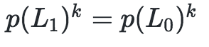
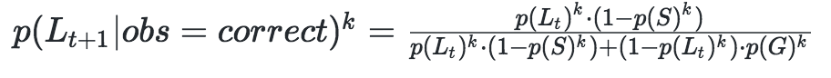
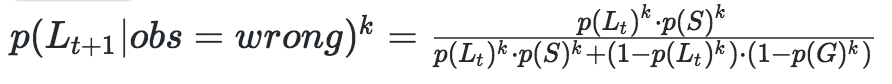

an explorable explainable
by Tongyu Zhou, Haoyu Sheng, Iris Howley
Bayesian knowledge tracing (BKT) is an AI algorithm
used in intelligent tutoring systems to model a learner’s
mastery of the skill being taught.
Let us first consider this algorithm (BKT) in the context of an “alchemy” metaphor. Think of the large beaker as representative of the overall mastery of the student for the one skill of interest. The test tubes are representative of the factors that go into calculating mastery.
These factors are called parameters. BKT uses a total of 4
different parameters. From left to right, they are:
1) init : probability of learner knowing the skill beforehand
2) transit : probability of learner learning the skill after application
3) slip : probability of learner messing up when using a known skill
4) guess : probability of learner has a lucky guess
The weights these parameters carry in the equation are determined by
the person applying the algorithm.
As we are dealing with probabilities, this person can set each parameter
value as anything from 0 to 1. While this is the theoretical setup,
these parameter values in practice are usually bounded by more
restrictive ranges.
That is, a common model is to set P(slip) <= 0.1 and P(guess) <= 0.3 to make the mastery predictions more realistic. What this does, mathematically, is to minimize the sum-of-squares residual.
Before taking the actual evaluation (or after pre-test), the probability
of a student mastering the skill is equal to the init probability:

In other words, the greater the init value is, the higher the level of mastery
is before any questions are even answered.
The algorithm relies on something called “conditional probability.” That is,
depending on whether a learner answers a current question correctly or incorrectly,
the formulas we use to calculate their mastery for that state will be different!
Correct answer:

Incorrect answer:

Continuing with the notion of “conditional probability,” the mastery of a current
state also depends on the mastery of a previous state.
This is a “Markov chain”, so the mastery of the most recent state is both
dependent on the previous immediate state (more significantly) and the
first state (less significantly).
Note that this means even, when a learner gets everything wrong, the mastery still increases, albeit by a little bit.
Until they have achieved at least 95% mastery. Note that this is the only requirement--it does not matter how many questions they have answered thus far or how many correct streaks they have. Now, the skill is mastered!
Congrats on finishing the explainable!
Click here to continue on to the next step